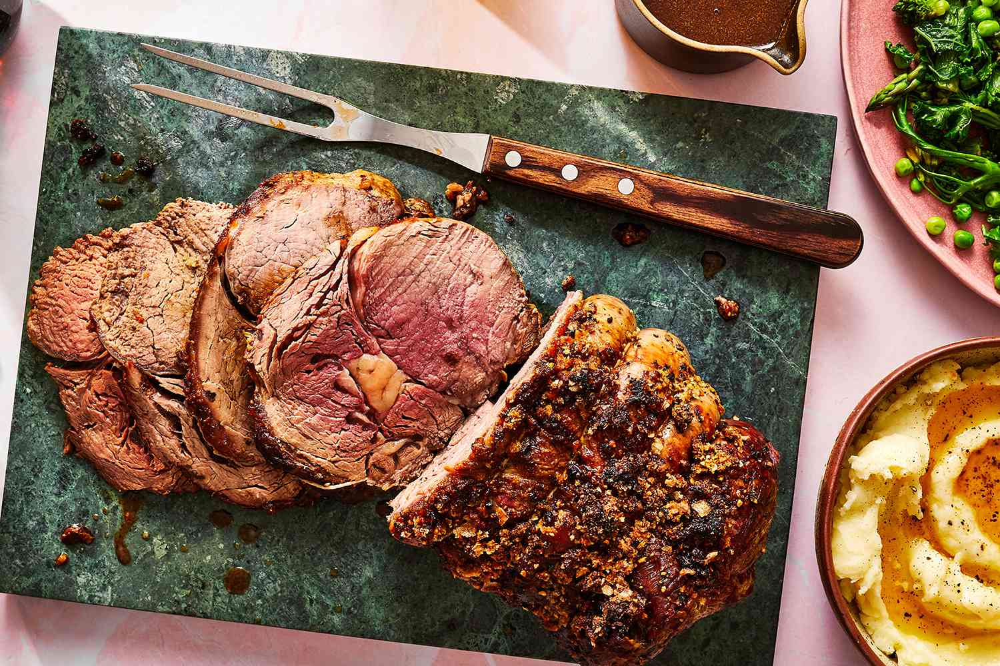

Rib Eye Roast

Easy and delicious Rib Eye Roast
One of the best ways to make a quick and super
delicious meal for your family. The ribeye texture and
taste will please everyone on the table!
Ingrediants
- 1 cup softened butter
- 6 cloves garlic, minced
- 1 (4 pound) bone-in rib-eye roast
- sea salt and cracked black pepper to taste
Steps
- Preheat the oven to 500 degrees F (260 degrees C).
- Beat butter and garlic together in a bowl.
- Poke several holes in rib eye with a sharp knife. Rub butter mixture all over meat and season with salt and pepper.
- Place rib eye fat-side up in a roasting pan.
- Roast in the preheated oven for 20 minutes.
- Continue cooking until rib eye is reddish-pink and juicy in the center
- Eat and enjoy!
Return to main page